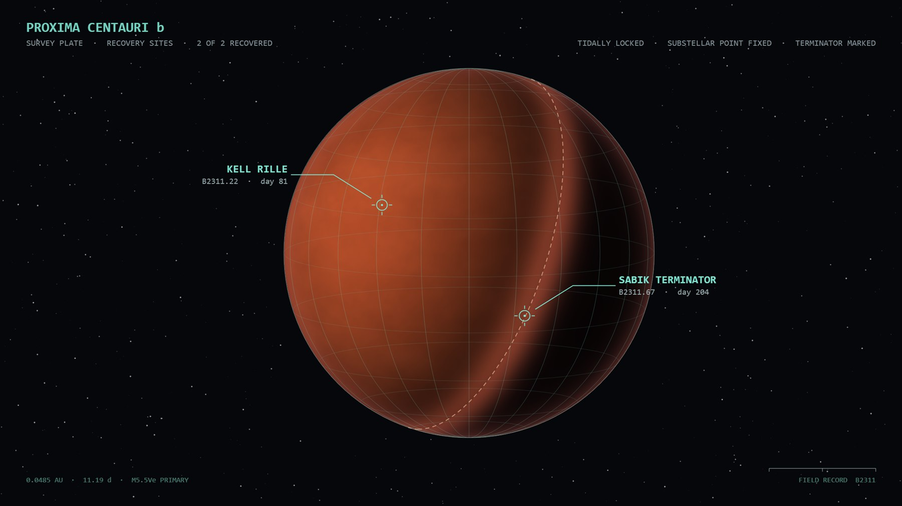

Four objects were recovered. All produce sound continuously, by means that have no counterpart among our instruments, and none has been persuaded to stop.

None of the four was made by us. All are bodies of four spatial dimensions, of which we meet only a three-dimensional section — move the section and a different part of the object is simply present, entering and leaving at the boundary without damage.
None has controls. There are no markings, no surfaces that invite a hand, nothing that moves when pushed. Every named quantity on the frames around them was chosen by us, for our convenience, and describes what our apparatus does rather than any faculty the objects possess.
All four findings in one download · 30 MB →
It counts. Every part of it holds a count that rises at its own rate, and on reaching the top it discharges and shoves the counts beside it forward — so a discharge can carry its neighbours over with it, and the object speaks in bursts of every length from one part to all of them.
Its sound is not a vibration at all. It is the list of moments at which something happened, and rhythm, pitch and colour are one quantity in it — the rate of events — heard at three scales.
Exposed to a pulse it eases towards it, without ever arriving. Pushed harder it comes apart instead: it can be led and it cannot be forced.
It was collected in the first week and left in a crate for two years. What made anyone look again was that two independent clocks stored beside it had stopped drifting apart.
Recovered material →Its sound is the vibration of its own connectedness — a network ringing according to how its parts are joined. Disturb it in a different place and it speaks differently, because a different part of the structure is being asked to move.
Energy put into it does not decay in place. It travels, from one mode into its neighbours, so a sustained sound is the object exploring itself.
It did not come up alone. A second body lay beside it, and on raising the first the second changed pitch.
Recovered material →Not a body but a lattice: a regular four-dimensional array whose section is a tiling of eightfold symmetry — perfectly ordered, and never repeating anywhere in its extent.
Its sound belongs to a category between tone and noise that mathematics has always described and no material we have made produces: a dust of frequencies with self-similar gaps at every scale.
Each of the sixty-seven sat at the centre of its own void, spaced with a regularity that survives measurement.
Recovered material →A web, not a body: slender conduits meeting at junctions, the whole of it lying on the curved four-dimensional surface our three dimensions cut through. What confounds the survey is that it shares almost nothing with the other three.
It does not answer being struck — it MOVES ENERGY, continuously and unasked, and the moving of it is a sound, and the sound is deep. Warming a conduit is how it is tuned: heat sets the speed of sound, the speed of sound sets the pitch, so to name a note is to command a temperature.
The working hypothesis is a distribution device — that its builders moved power along these conduits as low sound, the way we move it as current, and that what is heard is their grid, still carrying. The survey holds the hypothesis loosely; no power engineer tolerates this much beauty in a bus bar.
Recovered material →Twenty-two passages taken off the frame during the survey, up to thirty seconds each. For the first three objects the earliest two of each are the catalogue itself, and the remaining three move a single quantity across its travel rather than setting it and leaving it there — which is the method the report ends by recommending, and the only one that found anything. The six from B2311.104, the newest finding, are given last: the grid heard carrying nothing, then played, then warmed, then driven until it comes apart. The names are the ones the survey used among itself; the designation and the journal reference follow.
Listen to the twenty-two passages →
The full account, written in three registers it never mixes — what has been established and may be quoted, what is suspected and is marked as suspected, and the nine questions the survey was unable to close.
Read the findings → PDF →On the frame — the apparatus around each object was built by the expedition so that a human being could act on them at all. It should not be mistaken for part of them. Where the report says an object "answers" or "explores itself", these are the plainest available descriptions of measured behaviour, and are not offered as claims about intent.